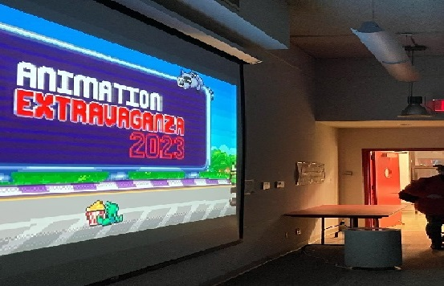
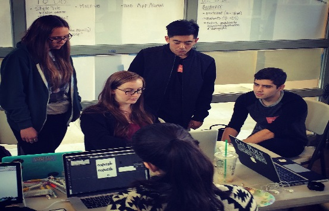

Home
Catalogue
WIP
Discipline
Digital Design
Animation
Industrial Design
Degree
Associate
Bachelor
Borough
Brooklyn
Bronx
Manhattan
Queens
All Programs
Borough of Manhattan Community College
Animation and Motion Graphics
A.S.
The Animation and Motion Graphics program provides students with the fundamentals of two- and three-dimensional (2D and 3D) animation, motion graphics, and special effects for advertising campaigns, video games, movies, and television.
Borough of Manhattan Community College
Multimedia Programming and Design
A.S.
The Multimedia Programming and Design Program prepares students for careers in a variety of multimedia industries, companies and institutions that develop, produce or market multimedia products, programs or services.

The City College of New York
Electronic Design and Multimedia
B.F.A.
The Electronic Design & Multimedia prepares students for careers in design in traditional print and emerging electronic media. It offers one of the most comprehensive, affordable 4-year programs in electronic art at a New York City public university, and has a 18-year record of alumni success.sc

Baruch College
Graphic Communication
B.A.
The graphic communication specialization provides training in graphics as well as basic training in the broader aspects of business communication. It prepares the graphic artist to enter a business environment.